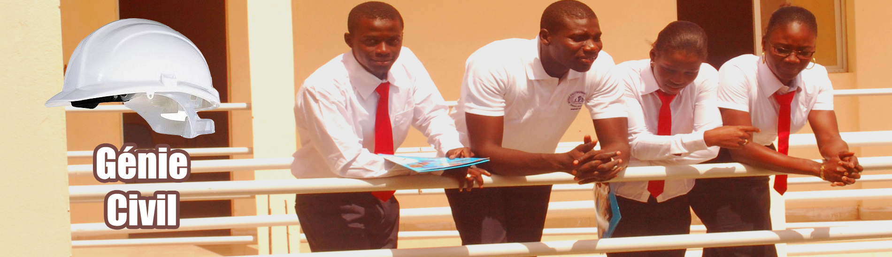

Thomas Sankara est un homme politique anti-impérialiste, panafricaniste et tiers-mondiste burkinabè. Il est né le 21 décembre 1949 à Yako en Haute-Volta et mort assassiné le 15 octobre 1987 à Ouagadougou au Burkina Faso.
Biographie
Thomas Isidore Noël Sankara était un « Peul-Mossi » issu d’une famille catholique. Son père était un ancien combattant et prisonnier de guerre de la Seconde Guerre mondiale. Il a fait ses études secondaires d’abord au lycée Ouezzin Coulibaly de Bobo-Dioulasso, deuxième ville du pays, puis à partir de la seconde et jusqu’au bac à Ouagadougou, au PMK, le Prytanée militaire du Kadiogo. Il a suivi tout comme son ami Blaise Compaoré une formation d’officier à l’École militaire inter-armée (EMIA) de Yaoundé au Cameroun, puis à l’Académie militaire d’Antsirabe, à Madagascar, et devint en 1976 commandant du CNEC, le Centre national d’entraînement commando, situé à Pô, dans la province du Nahouri, à 150 km au sud de la capitale. La même année, ils prennent part à un stage d’aguerrissement au Maroc. Ensemble, ils fondent le Regroupement des officiers communistes (ROC) dont les autres membres les plus connus sont Henri Zongo, Boukary Kabore et Jean-Baptiste Lingani.
En septembre 1981, il devient secrétaire d’État à l’information dans le gouvernement du colonel Saye Zerbo. Il démissionne le 21 avril 1982, déclarant « Malheur à ceux qui bâillonnent le peuple ! ». Sankara devint Premier ministre en janvier 1983, mais fut limogé et mis aux arrêts le 17 mai, après une visite de Guy Penne, conseiller de François Mitterrand. Le 4 août 1983 Thomas Sankara accède à la présidence du Conseil national révolutionnaire. Il définit son programme comme anti-impérialiste, en particulier dans son « Discours d’orientation politique », écrit par Valère Somé. Son gouvernement retira aux chefs traditionnels les pouvoirs féodaux qu’ils continuaient d’exercer. Il créa les CDR (Comités de défense de la révolution), qui eurent toutefois tendance à se comporter en milice révolutionnaire faisant parfois régner une terreur peu conforme aux objectifs de lutte contre la corruption5.
Le 15 octobre 1987, Thomas Sankara fut assassiné lors d’un coup d’État et plusieurs jours plus tard, il fut déclaré « décédé de mort naturelle » par un médecin militaire. L’absence de tout procès ou de toute enquête de la part du gouvernement burkinabè a été condamnée en 2006 par le Comité des droits de l’homme des Nations unies (voir Haut-Commissariat des Nations unies aux droits de l’homme)6. Par ailleurs, le gouvernement français de l’époque (cohabitation entre Jacques Chirac qui gouverne et François Mitterrand qui préside) est soupçonné d’avoir joué un rôle dans cet assassinat, ainsi que plusieurs autres gouvernements africains gouvernés par des amis de la France7,4. Son frère d’armes, Blaise Compaoré, actuel président du Burkina Faso, est soupçonné d’être le principal responsable de son assassinat avec d’autres acteurs politiques. Kadhafi pourrait aussi être impliqué et avoir utilisé ce meurtre pour redevenir un ami de la France. C’est notamment la famille Sankara, réfugiée en France, qui soutient ces hypothèses. Cette hypothèse est aussi soutenue par la plupart des historiens africains8,4. En novembre 1986, il avait attaqué la France de la cohabitation devant les caméras en présence de François Mitterrand pour avoir accueilli Pieter Botha, le premier ministre d’Afrique du Sud, et Jonas Savimbi chef de l’UNITA, l’un et l’autre « couverts de sang des pieds jusqu’à la tête »9. De ce fait, aux yeux de Thomas Sankara, ces gouvernants « en portent aujourd’hui et toujours la responsabilité »10. Si la décision de condamner l’absence d’enquête constitue une première mondiale dans la lutte contre l’impunité, elle est insuffisante, puisqu’elle n’a conduit à aucune condamnation.
Thomas Sankara (et certains de ses camarades tués lors du coup d’État) furent enterrés sans tombeaux au Cimetière de Dagnoën à Ouagadougou à 12° 21′ 55.58″ N 1° 29′ 01.05″ O. Plus tard, des tombeaux simples de ciment y étaient construits. Thomas Sankara a été proclamé modèle par la jeunesse africaine au forum social africain de Bamako 2006 et au forum social mondial de Nairobi en 2007. Depuis le 28 décembre 2005, une avenue de Ouagadougou porte son nom, dans le cadre plus général d’un processus de réhabilitation décrété en 2000 mais bloqué depuis lors11. Diverses initiatives visent à rassembler les sankaristes et leurs sympathisants, notamment par le biais d’un comité national d’organisation du vingtième anniversaire de son décès, de célébrer sa mémoire, notamment par des manifestations culturelles, tant au Burkina Faso qu’en divers pays d’implantation de l’émigration burkinabée. En 2007, pour la première fois depuis 19 ans, la veuve de Thomas Sankara, Mariam Serme Sankara, a pu aller se recueillir sur sa tombe présumée lors des 20e commémorations à Ouagadougou4.
Idées et actions politiques Thomas Sankara était en premier lieu un des chefs du Mouvement des non-alignés, les pays qui durant la Guerre froide ont refusé de prendre parti pour l’un ou l’autre des deux blocs. Il a beaucoup côtoyé des militants d’extrême gauche dans les années 1970 et s’est lié d’amitié avec certains d’entre eux. Il a mis en place un groupe d’officiers clandestins d’influence marxiste : le Regroupement des officiers communistes (ROC). Dans ses discours, il dénonce le colonialisme et le néo-colonialisme, notamment de la France, en Afrique (notamment les régimes clients de Côte d’Ivoire et du Mali, lequel lance plusieurs fois des actions militaires contre le Burkina Faso, soutenues par la France). En octobre 1986, peu avant le sommet Gorbatchev-Reagan à Reykjavik, il se rendit une semaine en URSS. Devant l’ONU12, il défend le droit des peuples à pouvoir manger à leur faim, boire à leur soif, être éduqués. Pendant ces quatre années le Burkina-Faso fut ainsi, selon les critères géopolitiques nés au milieu des années 1970, la dernière révolution de l’« Afrique progressiste », opposée à l’« Afrique modérée ».
Souhaitant redonner le pouvoir au peuple, dans une logique de démocratie participative, il créa les CDR (Comités de défense de la révolution) auxquels tout le monde pouvait participer, et qui assuraient la gestion des questions locales et organisaient les grandes actions. Les CDR étaient coordonnés dans le CNR (Conseil national de la révolution). Cette politique aurait réduit la malnutrition, la soif (avec la construction massive par les CDR de puits et retenues d’eau), la diffusion des maladies (grâce aux politiques de « vaccinations commandos », notamment des enfants, burkinabés ou non) et l’analphabétisme (l’analphabétisme serait passé pour les hommes de 95 % à 80 %, et pour les femmes de 99 % à 98 %, grâce aux « opérations alpha »).
Sankara a également tenté de rompre avec la société traditionnelle inégalitaire burkinabé, en affaiblissant le pouvoir des chefs de tribus, et en cherchant à intégrer les femmes dans la société à l’égal des hommes. Il a aussi institué la coutume de planter un arbre à chaque grande occasion pour lutter contre la désertification. Il est le seul président d’Afrique à avoir vendu les luxueuses voitures de fonctions de l’État pour les remplacer par de basiques Renault 5. Il faisait tous ses voyages en classe touriste et ses collaborateurs étaient tenus de faire de même. Il est célèbre aussi pour son habitude de toujours visiter Harlem (et d’y faire un discours) avant d’arriver à l’ONU. Il est considéré par certains comme le Che Guevara africain.